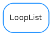

LoopList¶

-
class
LoopList(itemlist=[])[source]¶ Bases:
objectthis class provides an effectively cyclic list. It can be used, e.g., for storing colors or pen properties to be changed automatically in a plot
A LoopList stores an internal index to remember the last accessed item in the list It provides previous(), current() and next() methods that return the previous,current and next items in the list. The method allItems() returns a copy of all items contained in the list. The index can be accessed by setCurrentIndex() and getCurrentIndex() (setCurrentIndex(i) additionally returns new current item) Items can be accessed *without modifying the current index* by using llist[i] and llist[i]=x syntax len(llist) returns the period of the list.
Note
only basic methods of lists are implemented for llists. In particular, the following are not implemented:
- slicing
- resizing (append, insert, del,...)
- binary operators (+,*,...)
..note:
it can be used for loops, but the loop will be infinite unless other condition is used for exiting it: - for item in llist: print item # This is a infinite loop!! - for i in range(len(llist)):print llist[i] #This is not infinite since len(llist) returns the period of the list